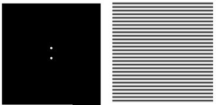
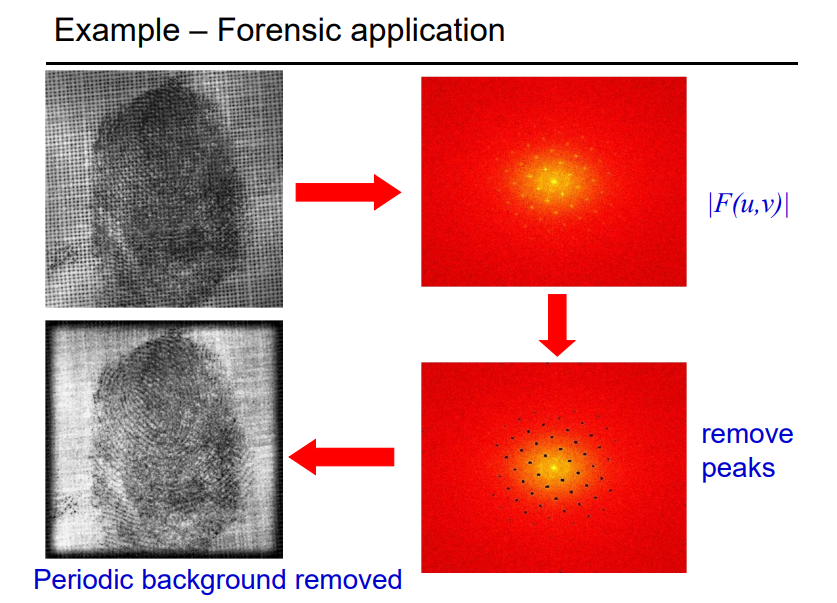

二维傅里叶变换的数学表达式
F [ f ( x , y ) ] = ∬ f ( x , y ) e − i ( k ⃗ ⋅ r ⃗ ) , k ⃗ = { 2 π λ x , 2 π λ y } \mathcal{F}[f(x,y)]=\iint f(x,y) e^{-i (\vec{k} \cdot \vec{r} )} , \quad \vec{k} = \left\{\frac{2\pi}{\lambda_x}, \frac{2\pi}{\lambda_y} \right\}
F [ f ( x , y )] = ∬ f ( x , y ) e − i ( k ⋅ r ) , k = { λ x 2 π , λ y 2 π }
Here, the notation d r ⃗ \text{d}\vec{r} d r d x d y \text{d}x \text{d}y d x d y spatial frequency ( u , v ) (u,v) ( u , v ) wave vector k k k
F [ f ( x , y ) ] = ∬ f ( x , y ) e − 2 π i ( u x + v y ) d x d y \mathcal{F}[f(x,y)] = \iint f(x,y) e ^{ -2 \pi i (ux + vy) } dxdy
F [ f ( x , y )] = ∬ f ( x , y ) e − 2 πi ( ux + v y ) d x d y
关于空间频率:k 0 \mathbf{k}_0 k 0 k 0 1 λ \mathbf{k}_0 \frac{1}{\lambda} k 0 λ 1 { u , v , w } \{u, v, w \} { u , v , w }
一维的傅里叶变换是以正弦函数作为基底对f(x,y)进行展开；而二维的傅里叶变换就是以平面正弦波对函数进行展开.（在光学中，我们知道e i ( k ⋅ r − ω t ) e ^{i(\mathbf{k} \cdot \mathbf{r}-\omega t)} e i ( k ⋅ r − ω t ) e j ( k ⋅ r )
e^{j(\mathbf{k\cdot r})} e j ( k ⋅ r )
函数可以用狄拉克delta函数展开，即
f ( t ) = ∫ − ∞ ∞ f ( τ ) δ ( t − τ ) d τ f(t) = \int_{-\infty}^{\infty} f(\tau) \delta(t-\tau) d\tau
f ( t ) = ∫ − ∞ ∞ f ( τ ) δ ( t − τ ) d τ
也就是说，delta函数也是一组完备的基矢。从线性变换的角度来看，我对f(x,y)进行的线性变化是既可以看成对f(x,y)的变换（主动变换视角）、也可以看成是对基矢量的变换（被动变换视角）。因此delta函数的傅里叶变换有必要计算一下。只要知道delta函数的傅里叶变换，我们就可以用 F [ δ ( x − x 0 ) δ ( y − y 0 ) ] \mathcal{F}[\delta(x-x_0)\delta(y-y_0)] F [ δ ( x − x 0 ) δ ( y − y 0 )]
F [ δ ( x ) δ ( y ) = 1 \mathcal{F}[\delta(x)\delta(y) = 1
F [ δ ( x ) δ ( y ) = 1
F [ δ ( x , y − a ) + δ ( x , y + a ) ] = e − 2 π i a v + e 2 π i a v = 2 cos ( 2 π a v ) \mathcal{F}[\delta(x,y-a) + \delta(x,y+a)] = e ^{ -2\pi i av } + e ^{ 2\pi i av } = 2 \cos (2 \pi a v)
F [ δ ( x , y − a ) + δ ( x , y + a )] = e − 2 πia v + e 2 πia v = 2 cos ( 2 πa v )
下图为 δ ( x − a ) δ ( y − b ) \delta(x-a)\delta(y-b) δ ( x − a ) δ ( y − b )

卷积
卷积的形式为：
( f ∗ g ) ( t ) = ∫ f ( τ ) g ( t − τ ) d τ (f*g)(t) = \int f(\tau) g(t-\tau) d\tau
( f ∗ g ) ( t ) = ∫ f ( τ ) g ( t − τ ) d τ
函数内积的形式为（实数域内）：
( f , g ) = ∫ f ( t ) ⋅ g ( t ) d t (f,g)= \int f(t) \cdot g(t) dt
( f , g ) = ∫ f ( t ) ⋅ g ( t ) d t
而 g ( t − τ ) = g ( − ( τ − t ) ) g(t-\tau)= g(-(\tau-t)) g ( t − τ ) = g ( − ( τ − t )) g ( τ ) g(\tau) g ( τ ) y y y t t t t t t ( f ∗ g ) (f*g) ( f ∗ g )
所以说，卷积就是，给 f 在 不同的 t 处的振幅一个权重（响应），然后求加权平均数（积分）。这里的 g 就可以看成一个频率响应函数。
傅里叶变换里学到过，
F [ f ∗ g ] = F ( f ) F ( g ) \mathcal{F}[f*g] = \mathcal{F(f)}\mathcal{F(g)}
F [ f ∗ g ] = F ( f ) F ( g )
也就是说，时域上的卷积等价于频域上的直接相乘。因此 g 可以看成是一个用来调制 f 的振幅的函数。这个 g 可以是高斯分布函数，也可以是低通、高通、带通滤波函数，等等。
3. 傅里叶变换的作用
二维傅里叶变换一般是用来处理图像的。比如，夫琅和费衍射就是对光的分布函数进行了一次傅里叶变换。数字全息技术利用的是光的衍射，所以也可以用傅里叶变换来实现。
此外，傅里叶变换加卷积还可以对图像进行去噪。如一个图像中存在周期性的结构，那么其傅里叶变换肯定会在这些周期性结构处产生。这个时候，只要把傅里叶变换后的图片中的这些极大值去掉，然后再进行傅里叶逆变换，就可以得到很干净的图片，下面是一个例子：

此外，还可以对图像进行复合。比如我有两张照片，一张照片里面是天空，另一张照片中是一只大大的鸟。我想要把天空那张照片的色彩应用到这只鸟的身上，并且保持鸟的轮廓还能被人辨识。我们知道，物体轮廓处的色彩变化往往很明显，也就是说，轮廓处的色彩近似于一个阶跃函数，阶跃函数的傅里叶变换中是有着很多高次谐波的；而没有轮廓的地方亮度往往是渐变的，所以主要是低次谐波。所以，我们只需要将第一张照片傅里叶变换之后乘以一个低通滤波函数、第二张照片傅里叶变换后乘以一个高通滤波函数，然后将俩图重叠就可以了。
文中的大部分知识和所有的两张图片均来源于Oxford一位老师的slide 。